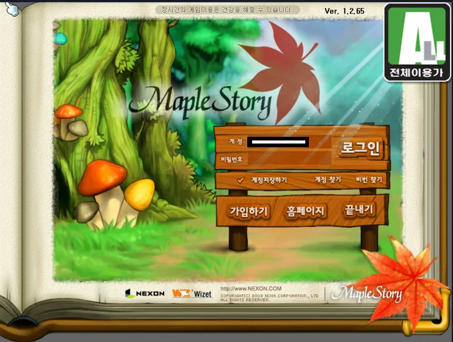
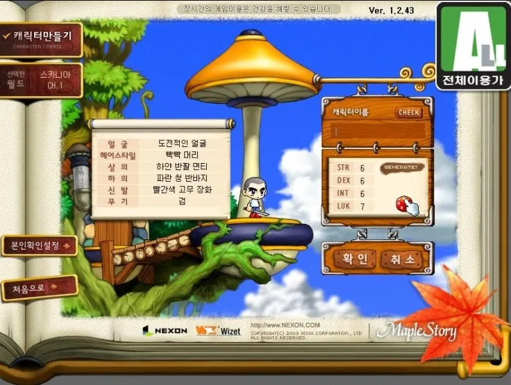
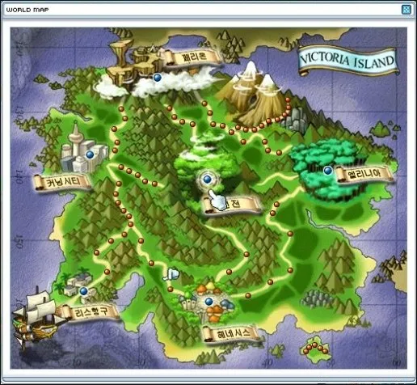

일명 메이플 리즈 시절로 불린다. 초창기 맵 분위기나 소지품, 작명을 보면 반지의 제왕, 특히 반지의 제왕 실사영화 시리즈에 많은 영향을 받은 것을 알 수 있다. 특히 발록, 아르웬, 미스릴의 원석은 100% 반지의 제왕의 오리지널 요소인데, 이걸 그대로 들여왔다. 마법사 계열은 완전히 차용 수준이라고 해도 과언이 아닌데, 간달프 + 사루만 = 하인즈, 로스로리엔 = 엘리니아, 모리아 = 개미굴에 인간을 신뢰하지 않는 요정이라는 컨셉까지 완벽하게 일치한다. 또한 반지의 제왕의 '가운데 땅'처럼 한자식 작명이 아닌 '솟아오른나무, 바람과가까운곳, 새들과가까운곳'처럼 시에 나올 법한 고유어로 풀어쓴 지역명이 그러하다. 또한 헤네시스의 전체적인 분위기는 호빗골과 유사하며, 에레브의 전반적인 배경은 깊은골에서 따왔다. 회의소 건물도 비슷하게 생겼다. 또한 현재는 없어졌지만 원피스의 샹크스와 동명의 선장 NPC도 나오나 외형은 다르다. 게임 시스템 면에서는 라그나로크 온라인의 영향을 많이 받았다. 특히 몇몇 스킬은 라그나로크에서 베껴온 거나 다름없는 것들도 있다. 대표적으로 라그나로크의 어쌔신이 사용하는 소닉 블로우와 메이플스토리의 시프가 사용하는 세비지 블로우는 타격하는 횟수만 빼고는 완전히 똑같다. 도적계열의 스킬, 스킬이 단검 난도질, 게다가 이름도 OO 블로우. 게다가 섀도어 5차 스킬로 '소닉 블로우'라는 5차 스킬이 등장했다. 던전 앤 파이터의 등장 이후에는 던파의 영향을 많이 받았는데, 빅뱅 이전을 기준으로 한다면 던파의 사망의 탑과 비슷한 무릉도장의 추가, 베히모스와 비슷한 시간의 신전 멤버 비슷한 패밀리 시스템 등. 이름은 메이플스토리지만 사실 단풍잎은 게임에 잘 나오지 않고, 오히려 버섯의 비중이 압도적으로 높다. 아이콘만 하더라도 버섯집이고 메이플 아일랜드의 마을 이름 중 버섯마을이 있으며, 빅토리아 아일랜드의 헤네시스는 집 모양이 모두 버섯인데다가 전등도 버섯 모양으로 디자인 되어있다. 당시 존재하던 해외여행 콘텐츠 중 일본 마을의 이름이 버섯신사이고, 신사의 무녀 NPC 이름은 키노코노코, 일본 필드에 뜨는 보스 몬스터는 블루 머쉬맘인 것을 보면 마을 자체가 버섯이 컨셉이다. 그 외에도 메이플의 얼굴 마담인 주황버섯은 메이플의 기타 아이템이나 소비 아이템에 자주 얼굴을 내밀고 있고, 펫 중에 키노라는 버섯 모양의 펫이 있다는 점, 몬스터 중 버섯 종류의 몬스터가 굉장히 많은 점 등, 이쯤 되면 이름을 '머쉬룸 스토리'로 바꿔야 하지 않나 하는 농담도 있었을 정도다.
